CH02-074 — images
【小さな棘】些細な失敗を手放せない理由
ep
CH02
Script Viewer
snapshot
guide
台本
音声
サムネ
画像
← CH02-073
CH02-075 →
CH02-074
画像
updated_at: 2026-01-13T13:11:39.158540Z
run_id:
CH02-074_mix433_20260106
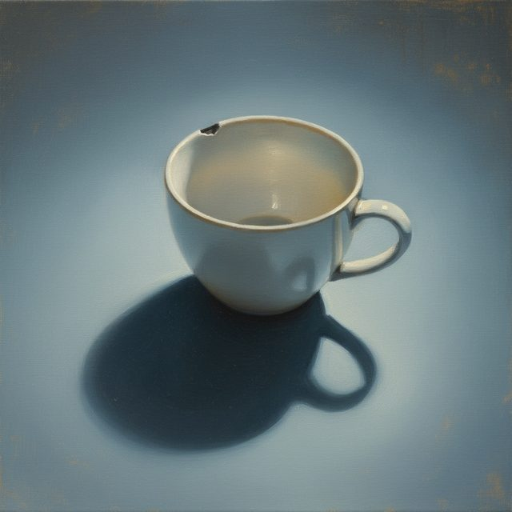
CH02-074
小さなミスの苦しみ／テーマの紹介
CH02-074
責める声の起源
CH02-074
反省と責めの分離／責める声のパターン
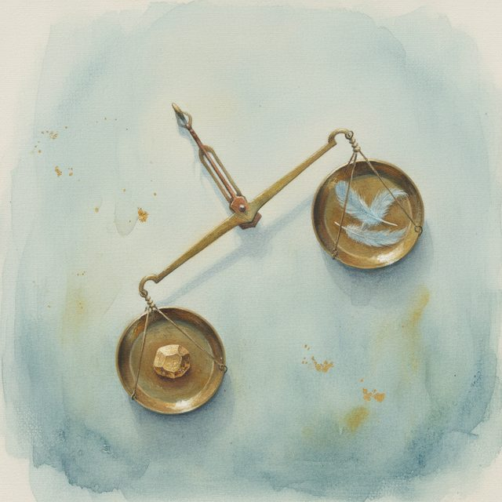
CH02-074
完璧主義の罠
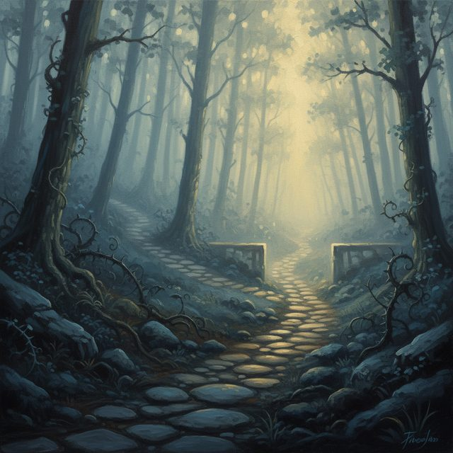
CH02-074
批判の選別／課題の分離
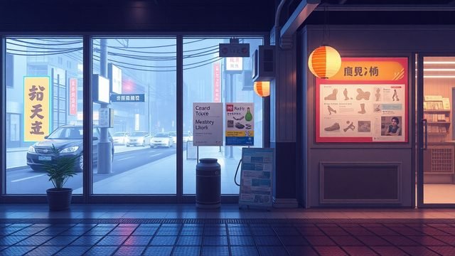
CH02-074
体の緊張と声の関係
CH02-074
時間の歪み
CH02-074
反省の終わりの儀式
CH02-074
記憶の解剖
CH02-074
内なる裁判官と弁護人
CH02-074
セルフコンパッションの三要素
CH02-074
行動でループを切る
CH02-074
褒められたときの反応
CH02-074
価値の中心の変化
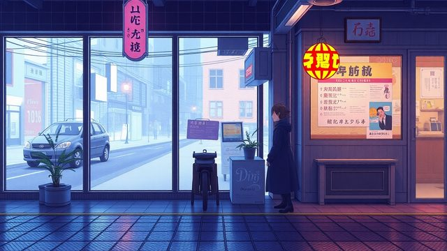
CH02-074
未完了タスクの処理
CH02-074
気づきの重要性
CH02-074
身体のケア
CH02-074
優しい行動の力
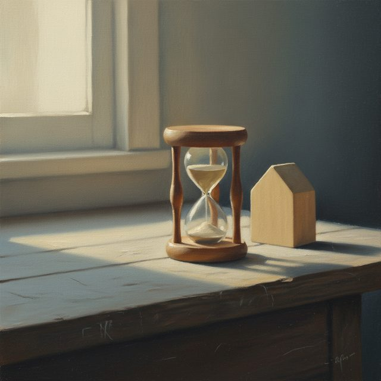
CH02-074
時間で区切る方法／安全基地の作り方
CH02-074
良かったことの記録
CH02-074
朝の決意／過去との向き合い方／未来への約束
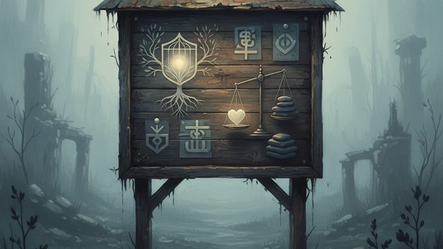
CH02-074
文化や家庭のルール／感度の調整
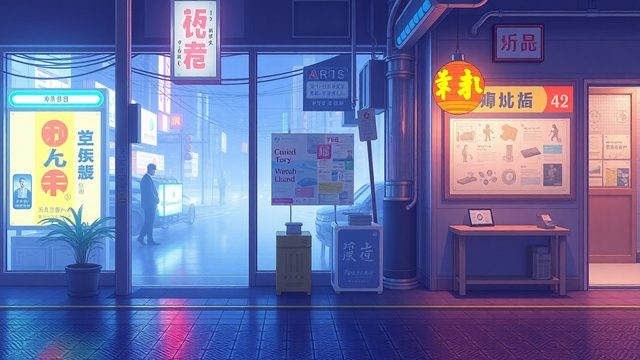
CH02-074
夜の責めの処理
CH02-074
未来の描き方
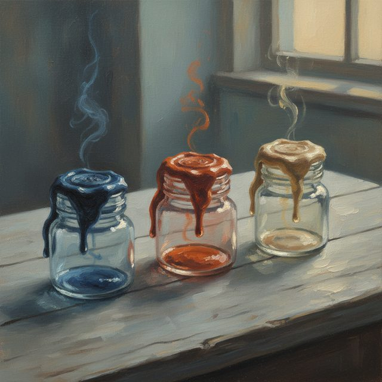
CH02-074
感情に名前をつける／詰まった時の再起動手順
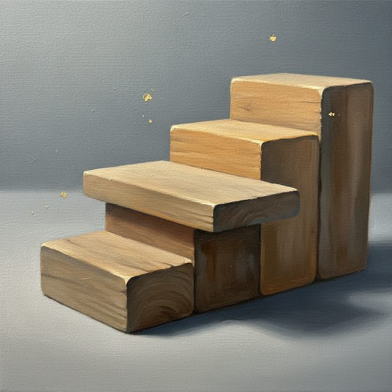
CH02-074
関係者の期待の調整／休みの意味／成長の折れ線
CH02-074
役割の変化／安心の存在
CH02-074
朝夜の儀式
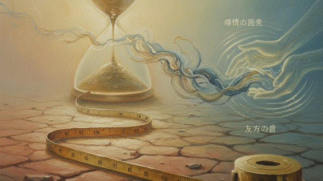
CH02-074
感情の距離／未来の視点／友人の声
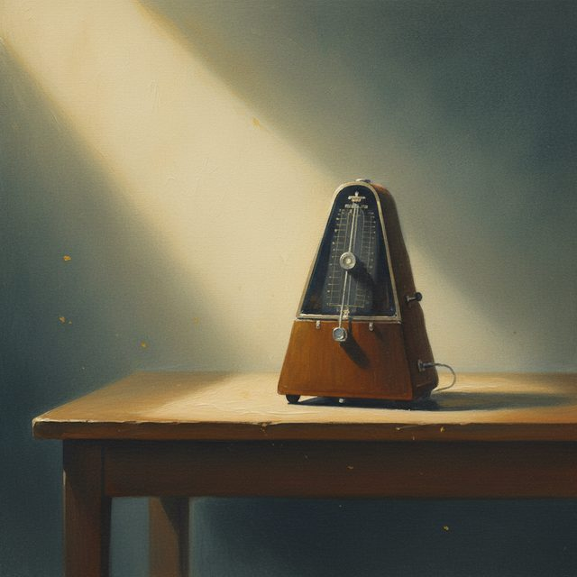
CH02-074
情報のコントロール／強みのリスト／整えられた作業環境
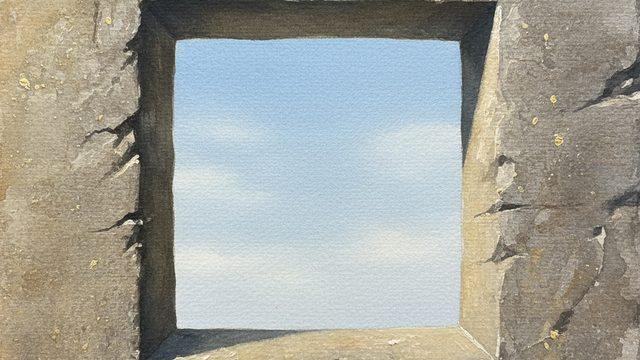
CH02-074
ミスを減らす仕組み／「今ここ」に戻る訓練
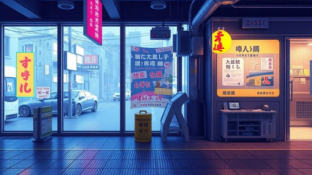
CH02-074
睡眠の優先
CH02-074
できたリストの活用／禁止から修正へ／内側の声にユーモア
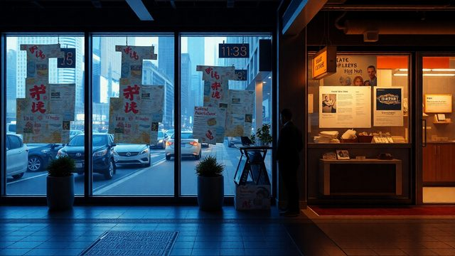
CH02-074
過去の成功の活用
CH02-074
周囲への共有／つながりの重要性
CH02-074
価値の多様化
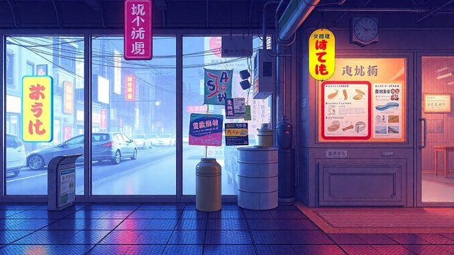
CH02-074
専門家の手を借りる／サウンドトラックの用意
CH02-074
役割の変化／小さな賭け／休息の重要性
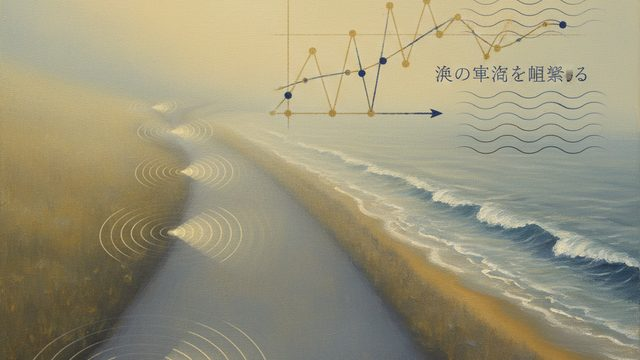
CH02-074
速度の言語化と持久力／進捗の折れ線グラフ／波の周期を観察する
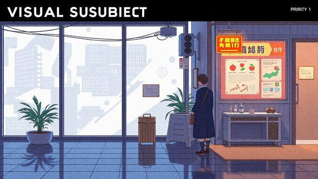
CH02-074
休みの終わりの言葉／幼い自分への言葉／朝の約束
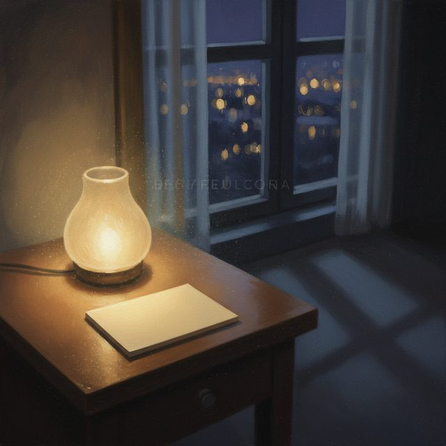
CH02-074
夜の誇り／セルフコンパッションの習慣
CH02-074
優しい行動の積み重ね